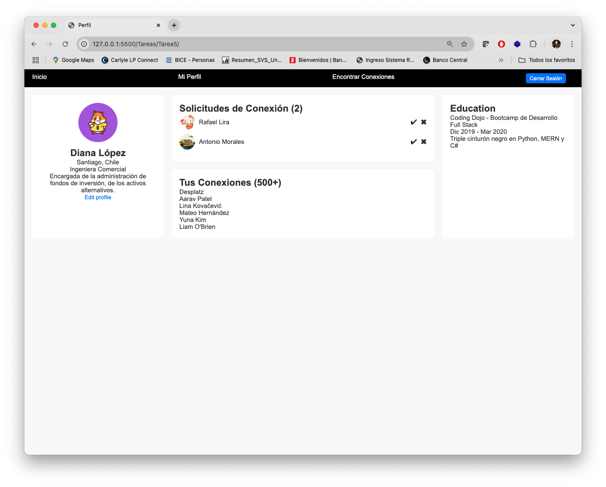
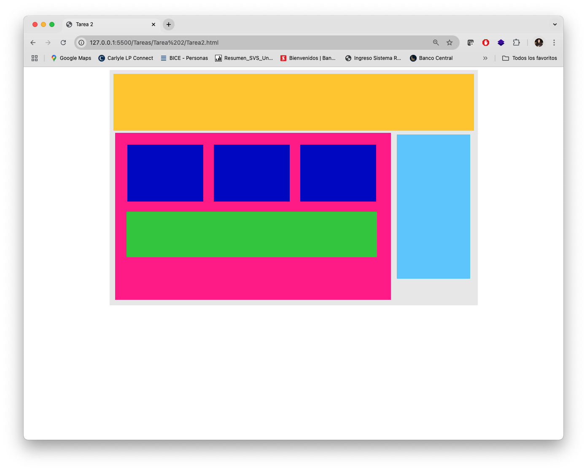

This is a project aimed at understanding the semantic structure of HTML, combined with visual layout by means of CSS stylesheets, as well as its rules. The main objective was to understand how to use the "grail leap" of web layout using the new CSS fletbox properties. On the other hand, this project also sought to understand the manipulation of the DOM through the selectors offered by JS and to provide interaction to the document.
Fake social media

Technologies: HTML + CSS + JS
construction of a fictitious social network, intended to practice layout with identifiers and classes defined with the various properties that CSS has at its disposal. Also, as part of the practice, interactivity is generated with certain components using javascript and selectors.
Flexbox Layout

Technologies: HTML + CSS
Basic exercise aimed at understanding how a website is structured using HTML and CSS, managing to adapt the box model to the needs of the content.